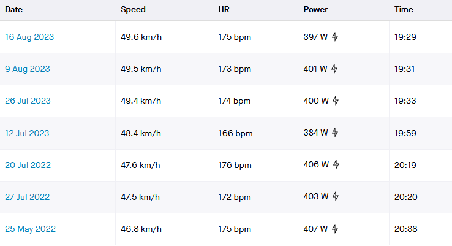
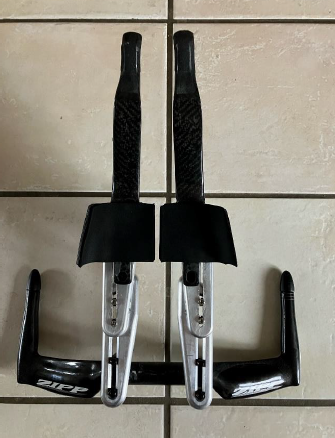
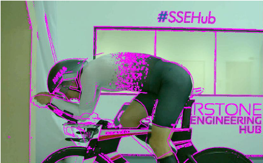
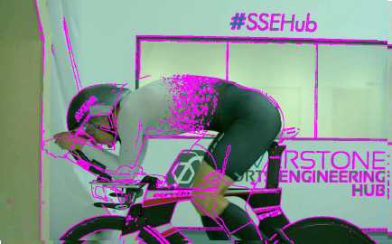
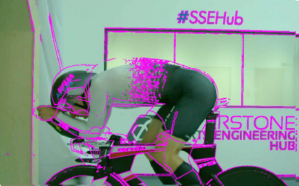
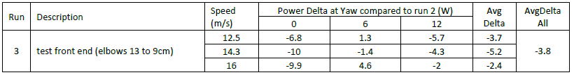
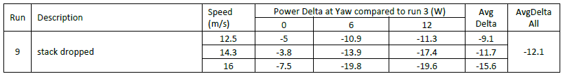

Wind Tunnel Testing 2023
This post describes my 2023 Silverstone Sports Engineering Hub adventure, where I had the opportunity to access the Silverstone Cycling Wind Tunnel. Throughout I will copiously quote and paraphrase from the results report prepared by Mike Twelves of Cycling Performance Analytics, who was kind enough to help me structure the session as well as administer the testing procedure.
On 3rd September 2023 I raced in the CTT National 10. I was delighted to take 12th place, but I couldn’t help thinking: could I have gone faster? There were some fairly sizable gaps towards the top of the board, with some truly incredible performances clocked on the day, but between my 12th, all the way up to 7th, six riders stopped the clock inside a 10 second window.
In the very same season, incremental improvements to equipment and position have allowed me to shave over a minute over my local testing grounds of E33/10 (long live the CCC Wednesday night club TT!) and that was achieved with field testing alone (more on that in a separate post, at some point in the future).
It’s actually quite amazing to see how much difference some fairly basic tinkering has made (or, in other words, how poor my original racing position was..!) and how times are getting faster with average power outputs getting smaller. To be fair, some of the gains were derived from improvements in pacing and power management (but, once again, this is a topic of its own), but no doubt aerodynamics played a major role. However, as can be seen from the last few runs, at around 19:30 mark I started scraping the barrel. I needed to up my game.

About two weeks later, I arrived at Silverstone. If upping the game is the aim, why not up it all the way. While DIY field testing and aero testing at Silverstone are kind-of related, it’s only in more or less the same way that a butter knife and a surgeon’s scalpel are kind-of related.
We had a rough game-plan for the test. My Cervelo, while it is a fantastic bike, does not possess a huge amount of easy, on-the-run adjustment. Additionally, I not only suffer from a condition known as ‘being really tall’, but also most of my height comes from the torso. Even with the biggest bikes (and old Cervelo P5’s run long-and-low, quite a lot more so than any current day stock) I run out of real estate very rapidly. In fact, one of the key take-away points in Mike’s report starts with ‘Given the rather extreme nature of the ration of upper body to leg length (…)’… You get the point.
We therefore opted for a mule rig - a not hugely elegant but effective arrangement of brackets that would simulate a range of geometries over-and-beyond what would be otherwise possible. This consisted of a pursuit base bar, two sets of slotted brackets, an angle-adjusting transition piece, and a set of carbon armrests/extensions (bolted onto one another in order listed).

We then did our best to match the baseline position. Because of the shape of the carbon extensions we couldn’t quite get the hands in the right position (which only became evident once we rigged the mule), and due to the geometry of the base bar the armrests ended up being a little closer together than in the baseline configuration (in hindsight we really should’ve seen this one coming, but that’s part of the learning), but we did a reasonable job of getting the head, chest and back lines right.
All in all, the mule run came 4W to the better on average with respect to the baseline, and it was 8W faster in zero yaw conditions. Clearly even with all the steelwork getting narrower is faster when you pedal straight into the wind!

One notable run resulted from increasing the extension angle and retracting the hands (or, should I say, arms, as in order for hands to go back so do the forearms, elbows and the whole interconnected limby lot) back. This compactifying of the front end decreased performance in dead-on wind conditions (zero yaw), but at the same time generated an enormous improvement at yaw angles of 6 and 12 degrees that also improved with speed. At 6 degrees and 16m/s (57.6km/h, or 36mph) the resulting gain was a whopping 24W! And this was not a one-off: all front-end-compact type positions exhibited slightly degraded low-yaw performance and significantly improved performance at higher yaws; moving the hands forward again resulted in transfer of watts in the other direction. I do not have a particularly good theory as to why that is the case, but it proved to be remarkably consistent.

Whatever the reason behind the compact-front-end run, the main improvement came from lowering the stack. Yes, you read this right: long-and-low is fast. Who would’ve thought! Well, at least I have it on paper, and backed up by a state-of-art facility. In the outline you can clearly see plenty of daylight between the baseline contour and the new position.
Looking at things head on, the position has moved on from being head-and-shoulders dominated, and the highest point on the profile is now unambiguously the lower back and the hips. Would’ve be interesting to find out whether even-lower is even-faster, but alas we ran out of time. I expect that the size of the wake is no longer driven by the head and shoulders, and further improvement may require dropping saddle height.

So how many watts did we save? Well, that would be the compound of the savings of the mule with respect to baseline (run 3) and the best run with respect to the mule (run 9). On average that works out at 15.9W, fairly evenly distributed over the various speed and yaw events. The stand-out results of 21.7W and 21.6W were obtained for high yaw, at high and medium speeds. Not sure how relevant this will be in racing, but next time I race in a hurricane I should go pretty quick… And the UK does seem to see more and more named storm events these days.


What does all this mean for next steps? Well, as I alluded to at the start, bikes don’t really come in the shape I want them to. Luckily though, CTT is not constrained by such mundane things as UCI regulations, and the UK racing scene is truly a marvellous arms race. In the spirit of tinkering I am hoping to realise the position we have devised in the wind tunnel by getting some custom bits made for my trusty P5. This won’t be trivial, as the Cervelo brackets are not exactly DIY friendly (curved, highly three-dimensional mating surfaces, as shown) but it should make for an interesting challenge (and a future post, too…). I am curious to see if going lower still is helpful, so will aim to include some room to test that.